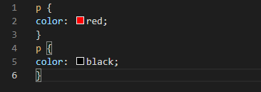

css如果在同一个标签中设置了几个相同的参数，那么后设置的会覆盖先前设置的
就是靠主结构近的会覆盖靠主结构远的
如下,最后只会用到最下面的

简单点，“子承父业”
比如下面的示例文本
如果给div标签加上color，那么它下面的span也会使用这个color
css这样表示
行高可以直接使用数字而不加单位表示，这是行高是字体大小的几倍取决于你输入的数字
如果在body标签输入了行高，下面的元素更改过字体大小则行高也会变化